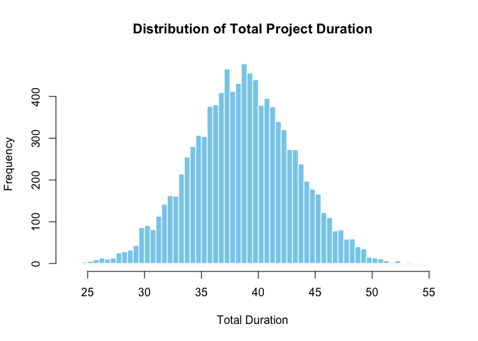

Data Analysis for Project Risk Managment via the Second Moment Method (SMM), Monte Carlo (MC) Simulation, Bayesian methods, Design Structure Matrices (DSMs), and more.
Installation
You can install the development version of PRA like so:
devtools::install_github('paulgovan/PRA')Usage
Here is a basic example which shows you how to solve a common problem using Monte Carlo Simulation:
library(PRA)
num_simulations <- 10000
task_distributions <- list(
list(type = "normal", mean = 10, sd = 2), # Task A: Normal distribution
list(type = "triangular", a = 5, b = 10, c = 15), # Task B: Triangular distribution
list(type = "uniform", min = 8, max = 12) # Task C: Uniform distribution
)
correlation_matrix <- matrix(c(
1, 0.5, 0.3,
0.5, 1, 0.4,
0.3, 0.4, 1
), nrow = 3, byrow = TRUE)
results <- mcs(num_simulations, task_distributions, correlation_matrix)
cat("Mean Total Duration:", results$total_mean, "\n")
#> Mean Total Duration: 38.64761
cat("Variance of Total Duration:", results$total_variance, "\n")
#> Variance of Total Duration: 19.96276
hist(results$total_distribution, breaks = 50, main = "Distribution of Total Project Duration",
xlab = "Total Duration", col = "skyblue", border = "white")
More Resources
Much of this package is based on the book Data Analysis for Engineering and Project Risk Managment by Ivan Damnjanovic and Ken Reinschmidt and comes highly recommended.
Code of Conduct
Please note that the PRA project is released with a Contributor Code of Conduct. By contributing to this project, you agree to abide by its terms.